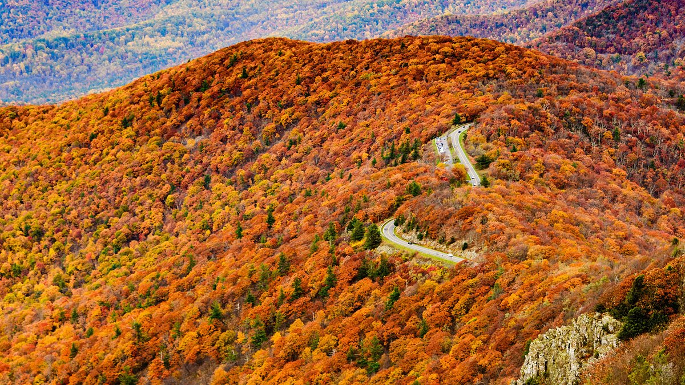

Skyline Drive is a 105-mile National Parkway that runs the entire length of the National Park Service's Shenandoah National Park in the Blue Ridge Mountains of Virginia, generally along the ridge of the mountains.
A Blue Ridge Parkway experience is unlike any other: a slow-paced and relaxing drive revealing stunning long-range vistas and close-up views of the rugged mountains and pastoral landscapes of the Appalachian Highlands. The Parkway meanders for 469 miles, protecting a diversity of plants and animals, and providing opportunities for enjoying all that makes this region of the country so special.
